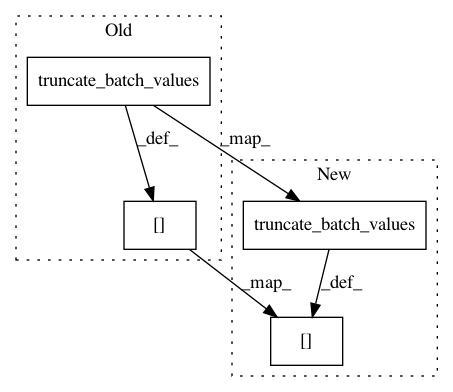

a8584040a66ed7d3d0d093c64f183c7dae7694f8,delft/sequenceLabelling/data_generator.py,DataGenerator,__data_generation,#DataGenerator#Any#,72
Before Change
if self.max_sequence_length and max_length_x > self.max_sequence_length:
max_length_x = self.max_sequence_length
// truncation of sequence at max_sequence_length
x_tokenized = truncate_batch_values(x_tokenized, self.max_sequence_length)
// prevent sequence of length 1 alone in a batch (this causes an error in tf)
extend = False
if max_length_x == 1:
max_length_x += 1
extend = True
// generate data
if self.embeddings.use_ELMo:
batch_x = to_vector_simple_with_elmo(x_tokenized, self.embeddings, max_length_x, extend=extend)
elif self.embeddings.use_BERT:
batch_x = to_vector_simple_with_bert(x_tokenized, self.embeddings, max_length_x, extend=extend)
else:
batch_x = np.zeros((max_iter, max_length_x, self.embeddings.embed_size), dtype="float32")
// store sample embeddings
for i in range(0, max_iter):
batch_x[i] = to_vector_single(x_tokenized[i], self.embeddings, max_length_x)
if self.preprocessor.return_casing:
batch_a = np.zeros((max_iter, max_length_x), dtype="float32")
After Change
if self.max_sequence_length and max_length_x > self.max_sequence_length:
max_length_x = self.max_sequence_length
// truncation of sequence at max_sequence_length
x_tokenized = np.asarray(truncate_batch_values(x_tokenized, self.max_sequence_length))
// prevent sequence of length 1 alone in a batch (this causes an error in tf)
extend = False
if max_length_x == 1:
max_length_x += 1
extend = True
// generate data
if self.embeddings.use_ELMo:
batch_x = to_vector_simple_with_elmo(x_tokenized, self.embeddings, max_length_x, extend=extend)
elif self.embeddings.use_BERT:
batch_x = to_vector_simple_with_bert(x_tokenized, self.embeddings, max_length_x, extend=extend)
else:
batch_x = np.zeros((max_iter, max_length_x, self.embeddings.embed_size), dtype="float32")
// store sample embeddings
for i in range(0, max_iter):
batch_x[i] = to_vector_single(x_tokenized[i], self.embeddings, max_length_x)
if self.preprocessor.return_casing:
batch_a = np.zeros((max_iter, max_length_x), dtype="float32")
In pattern: SUPERPATTERN
Frequency: 3
Non-data size: 4
Instances
Project Name: kermitt2/delft
Commit Name: a8584040a66ed7d3d0d093c64f183c7dae7694f8
Time: 2020-08-05
Author: luca@foppiano.org
File Name: delft/sequenceLabelling/data_generator.py
Class Name: DataGenerator
Method Name: __data_generation
Project Name: kermitt2/delft
Commit Name: 5b3b43786bc4eb3c3a3b3b8e068c7443af134702
Time: 2020-03-22
Author: luca@foppiano.org
File Name: delft/sequenceLabelling/data_generator.py
Class Name: DataGenerator
Method Name: __data_generation
Project Name: kermitt2/delft
Commit Name: a4be6bf1e151b55a04790378d1985832f8a4e2b7
Time: 2020-03-24
Author: luca@foppiano.org
File Name: delft/sequenceLabelling/data_generator.py
Class Name: DataGenerator
Method Name: __data_generation